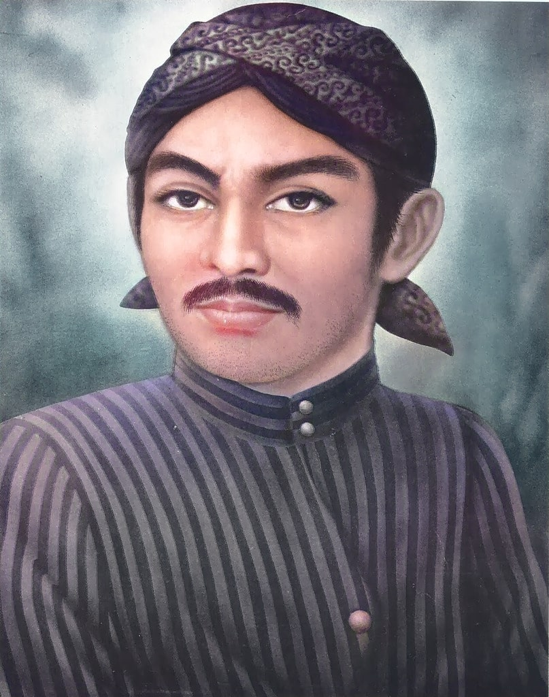

FAKTA-FAKTA SUNAN GUNUNG JATI
Profile Singkat Sunan Gunung Jati
Nama aslinya adalah Syech Syarief Hidayatulloh yang dilahirkan Tahun 1448 Masehi. Ayahanda Syech Syarief Hidayatulloh adalah Syarief Abdullah, seorang dari Mesir keturunan ke 17 Rosulullah SAW, bergelar Sultan Maulana Muhamad, Ibunda Syech Syarief Hidayatullah adalah Nyai Rara Santang dan setelah masuk Islam berganti nama menjadi Syarifah Muda’im adalah Putri Prabu Siliwangi dari kerajaan Padjajaran.Baca Selengkapnya>>>>>

FAKTA-FAKTA SUNAN AMPEL
Profile Singkat Sunan Ampel
Sunan Ampel (Raden Rahmat), adalah putera tertua Maulana Malik Ibrahim. di masa kecilnya ia dikenal dengan nama Raden Rahmat. Ia lahir di Campa pada tahun 1401 M dan diperkirakan wafat pada tahun 1481 M di Demak dan dimakamkan di sebelah barat Masjid Ampel, Surabaya. Nama Ampel sendiri, diidentikkan dengan nama tempat dimana ia lama bermukim, yakni daerah Ampel atau Ampel Denta, wilayah yang kini menjadi bagian dari Surabaya.Baca Selengkapnya>>>>>

Baca Selengkapnya>>>>>
FAKTA-FAKTA SUNAN KALIJAGA
Profile Singkat Sunan Kalijaga
Sunan Kalijaga memiliki nama asli Joko Said, yang diperkirakan lahir pada tahun 1450 M. Sunan Kalijaga merupakan putra dari adipati Tuban yang bernama Tumenggung Wilatikta atau Raden Sahur. Ayah Sunan Kalijaga yaitu Tumenggung Arya Wilatikyta merupakan keturuan dari pemberontak legendaris Majapahit, Ronggolawe. Berdasarkan riwayat masyhur, bahwa Adipati Arya Wilatikyta sudah memeluk Islam sejak sebelum lahirnya Joko Said. Meskipun seorang muslim, ia dikenal sangat kejam dan sangat taklid kepada pemerintah pusat Majapahit yang menganut Agama Hindu.Baca Selengkapnya>>>>>